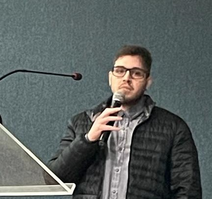

Rafael Tagliari Portfolio

Summary
I'm a Production Engineer, I love gaming, I'm fascinated by technology and I'm working hard to become a Fullstack Developer
Education
- Bachelors of Sciency and Technology, Universidade Federal de Alfenas (2015-2019)
- Bachelors of Production Engineering, Pontifícia Universidade Católica (2019-2023)
Work Experience
Skills
Soft Skills
- Ability to solve problems
- Effective communication
- Analytical thinking
Web Developer Skills
- HTML5: ⭐⭐
- CSS3: ⭐
- JavaScript: ⭐
Latest Projects
freeCodeCamp Telephone Number Validator Project